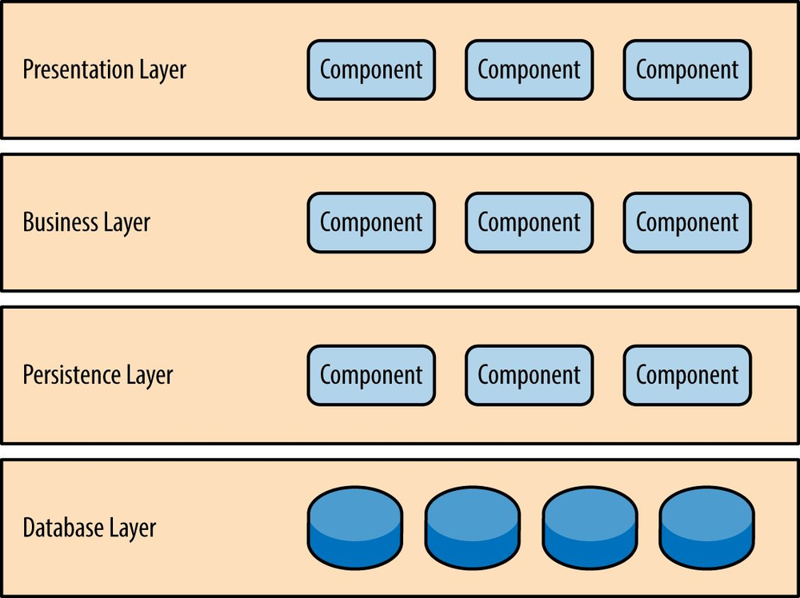
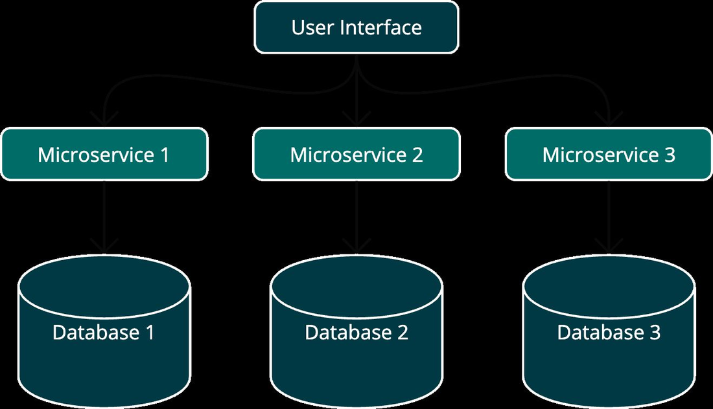
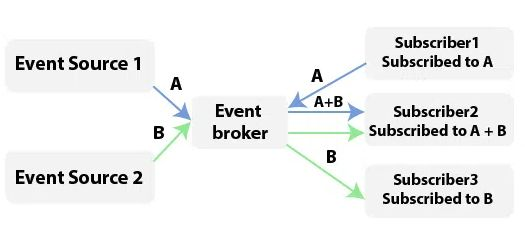
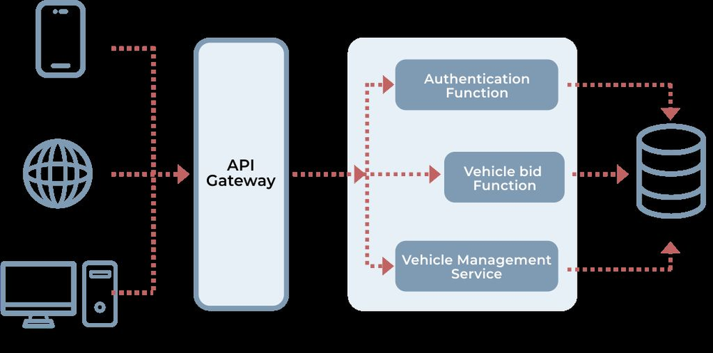
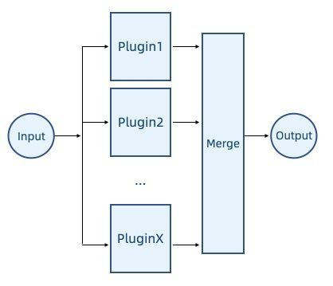
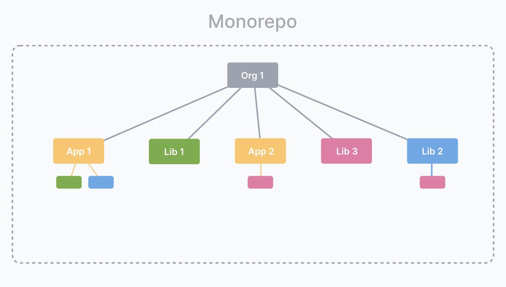

Monolith · Layered · Microservices · Event-driven · Serverless · Modular · Monorepo
→ next slide | ESC overview
1. What software architecture is and why a tester cares
2. Seven architecture styles, with pros and cons
3. How to choose an architecture
4. What each style changes about testing
Architecture describes the structure of a system: which components exist, and how they work together. A good architecture gives the system scalability, maintainability and the ability to adapt.
For a tester, architecture answers a practical question: where can I observe this behaviour, and where can I break it? The same defect in a monolith and across microservices needs completely different test setups.
Testing angle: easy to spin up end to end — but every change needs a full regression run.

Testing angle: the layers give you natural test levels — unit tests in the business layer, integration tests at the persistence layer, UI tests at the top.

+ scalability, independent deployments, technology flexibility per service · – more complex to deploy and operate; the network becomes a failure mode. Examples: Netflix, Amazon.
Testing angle: most defects live between services, not inside them. API and contract testing matter more than clicking the UI.

+ excellent for dynamic and distributed systems · – harder to trace and debug, because there is no single call stack. Examples: real-time data systems, financial applications.
Testing angle: ordering, duplicate and lost events are the classic defects. Expect asynchronous tests, waits and correlation IDs.

+ no infrastructure to manage, scales automatically · – best suited to smaller, self-contained tasks; cold starts and vendor limits are real. Examples: AWS Lambda, Google Cloud Functions.
Testing angle: you cannot attach a debugger to production. Logging, tracing and testing each function in isolation carry the load.

+ flexible and easy to extend · – module dependencies get tangled. Example: browsers and their plugins.

+ faster builds and tests through dependency tracking, shared code, one workflow · – the graph gets complex at scale. Examples: Google, Uber, Airbnb.
There is no best architecture. There is the one whose trade-offs you can live with — and that you can afford to test.
Add an architecture diagram and a short justification to your team's SRS document.
Full brief: Homework 5